철도신호산업기사 (2007-05-13 기출문제)
1과목: 전자공학
1. 전류증폭률 α가 0.95인 트랜지스터의 전류증폭률 β는 얼마인가?
- 18
- 19
- 29
- 28
(정답률: 69%)

2. 다음 그림은 어떤 소자의 등가회로이다. 이 소자의 명칭은 무엇인가?
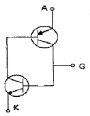
- SCS
- SSS
- SCR
- SUS
(정답률: 60%)
3. 회로에서 연산 차등증폭기의 출력전압은 몇 V인가? (단, R1=1kΩ, R2=10kΩ, R3=1kΩ, R4=10kΩ, V1=10.5V, V2=10V이다.)
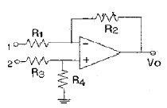
- 3
- -3
- 5
- -5
(정답률: 74%)
4. 트랜지스터가 증폭기로 동작하기 위해 어떻게 바이어스 되어야 하는가?
- 베이스와 이미터는 순방향 바이어스, 켈렉터와 베이스는 역방향 바이어스
- 베이스와 이미터는 순방향 바이어스, 켈렉터와 베이스는 순방향 바이어스
- 베이스와 이미터는 역방향 바이어스, 켈렉터와 베이스는 역방향 바이어스
- 베이스와 이미터는 역방향 바이어스, 켈렉터와 베이스는 순방향 바이어스
(정답률: 63%)
5. 바리스터에 대한 설명으로 가장 적합한 것은?
- 온도에 따라 전압을 변화시키는 소자
- 온도에 따라 저항값이 크게 변하는 소자
- 전류변화에 따라서만 저항값이 변하는 소자
- 가해지는 전압에 따라 저항값이 변하는 소자
(정답률: 42%)
6. 다음 중 N형 반도체를 만들기 위한 불순물로 사용되지 않는 원소는?
- P
- As
- Sb
- Al
(정답률: 47%)
7. 다음 검파기 중 SSB검파에 가장 적합한 것은?
- 링 검파기
- 다이오드 검파기
- 궤드래처 검파가
- 비 검파기
(정답률: 70%)
8. 다음 회로는 출력이 제한되는 비교기이다. 입력파형이 정현파로 주어질 때 출력파형으로 가장 적합한 것은? (단, 연산증폭기의 개방상태의 전압이득은 무한대이다.)
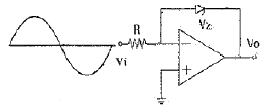
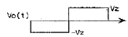
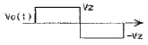
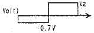
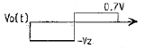
(정답률: 40%)
9. 이미터플로어에 대한 설명으로 옳지 않은 것은?
- 입력임피던스는 매우 높고 출력임피던스는 낮다.
- 전압 이득은 1보다 크다.
- 입력전압과 출력전압의 위상은 동상이다.
- 임피던스 정합용으로 많이 사용된다.
(정답률: 25%)
10. 8진수 347(8)을 10진수로 표현하면?
- 95
- 160
- 191
- 231
(정답률: 69%)
11. 단상 반파 정류회로에서 정류기의 이론적 최대효율은 약 몇 %인가?
- 20.3
- 40.6
- 60.9
- 81.2
(정답률: 74%)
12. 전압증폭도가 각각 10, 100인 저주파 증폭기를 직렬로 접속한 경우 종합전압이득은 몇 데시벨[dB]인가?
- 60
- 70
- 80
- 90
(정답률: 63%)
13. 볼 대수를 활용하여 논리식 A(A+B+C)를 간단히 하면?
- B+C
- A+B+C
- 1
- A
(정답률: 75%)
14. 슈머트 틀리거회로에 대한 설명 중 틀린 것은?
- 구형파 발생기의 일종이다.
- D-A 변환회로에 많이 이용된다.
- 쌍안정 멀티바이브레이터의 일종이다.
- 입력전압이 일정한 값 이상으로 되면 출력펄스가 상승하고, 입력전압이 일정한 값 이하로 되면 출력펄스가 하강(감소)하는 동작 회로이다.
(정답률: 36%)
15. 다음의 발진회로에서 23에 L(인덕터)을 연결하였을 때 발진하기 위한 조건으로 가장 적합한 것은?
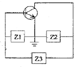
- Z1, Z2 : 용량성
- Z1, Z2 : 유도성
- Z1 : 유도성, Z2 : 용량성
- Z1 : 용량성, Z2 : 유도성
(정답률: 75%)
16. 송신 전력증폭기에서 A급이 잘 이용되지 않는다. 그 주된 이유로 가장 적합한 것은?
- S/N 비가 나쁘기 때문이다.
- 주파수 특성이 나쁘기 때문이다.
- 효율이 나쁘기 때문이다.
- 발진주파수가 불안정 하기 때문이다.
(정답률: 39%)
17. 멀티바이브레이터에 대한 설명 중 틀린 것은?
- 부궤환을 이용한 발진기의 일종이다.
- 전원전압이 조금 변해도 발진주파수는 크게 변하지 않는다.
- 계수회로나 구형파 발생회로 등에 사용된다.
- 쌍안정, 단안정, 비안정회로 등으로 구분한다.
(정답률: 35%)
18. FM 방식에 대한 설명 중 올바르지 않은 것은?
- AM 방식에 비해 주파수 대역폭이 넓다.
- 신호입력에 따라 반송파 주파수가 변한다.
- 일반적으로 신호대 잡음비를 개선하기 위해 수신기에 프리엠퍼시스 회로를 사용한다.
- 변조지수가 1보다 클 경우 AM 방식에 비해 수신 잡음 개선율이 높다.
(정답률: 55%)
19. 다음 그림은 어떤 파형을 발생하기 위한 회로이다. 이 회로의 명칭은?
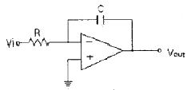
- 미분기
- 적분기
- 가산기
- 비교기
(정답률: 69%)
20. 펄스의 평균전력이 5W일 때 펄스의 첨주전력은 몇 W인가? (단, 펄스의 주파수는 100Hz, 펄스의 폭은 2ms 이다.)
- 5
- 10
- 20
- 25
(정답률: 58%)
2과목: 신호기기
21. 75kVA, 6000/200V의 단상변압기의 % 임피던스 강하가 4%이다. 2차 단락전류는 몇 A인가?
- 312.5
- 412.5
- 512.5
- 621.7
(정답률: 54%)
22. 3상 유도전등기의 원선도를 그리는데 필요하지 않은 시험은?
- 슬립측정
- 구속시험
- 무부하시험
- 저항측정
(정답률: 60%)
23. 주파수 60Hz의 유도 전동기가 있다. 전부하에서의 회전수가 매분 1164회이면 극 수는 어떻게 되는가? (단, 슬립은 3%이다.)
- 6
- 8
- 12
- 16
(정답률: 74%)
24. 맥동 주파수가 가장 많고 맥동률이 가장 적은 정류방식은?
- 3상 전파 정류
- 3상 반파 정류
- 단상 전파 정류
- 단상 반파 정류
(정답률: 54%)
25. 진로선별 계전기는 선로전환기의 어디에 설치 하는가?
- 반위배향
- 정위배향
- 정위대향
- 반위대향
(정답률: 54%)
26. 변압기의 누설리액턴스를 줄이는 가장 효과적인 방법은 어느 것인가?
- 권선을 분할하여 조립한다.
- 권선을 동심 배치한다.
- 철심의 단면적을 크게 한다.
- 코일의 단면적을 크게 한다.
(정답률: 58%)
27. NS형 전기선로전환기의 전동기는 어느 것을 사용하는 것이 가장 좋은가?
- 직권전동기
- 비동기모터
- 동기모터
- 콘덴서 기동형 단상유도전동기
(정답률: 57%)
28. 건널목 전동차단기에 사용하는 전동기로서 가장 많이 사용하는 전동기는?
- 직류직권전동기
- 직류분권전동기
- 직류가동복권전동기
- 직류차동복권전동기
(정답률: 71%)
29. 21PNR은 계전기의 기호이다. 여기에서 P는 무엇을 의미하는가?
- 신호기명칭
- 선로전환기 번호
- 진로방향
- 선로전환기(Point)
(정답률: 65%)
30. 전기 전철기에서 감속기어 장치에 해당하지 않는 것은?
- 마찰클러치
- 중간기어
- 쇄정자
- 전환기어
(정답률: 65%)
31. 변압기의 여자전류에 가장 많이 포함된 고조파는?
- 제2고조파
- 제3고조파
- 제4고조파
- 제5고조파
(정답률: 75%)
32. 직류기 정류 작용에서 전압 정류의 역할을 하는 것은?
- 보상권선
- 보극
- 탄소브러시
- 전기자
(정답률: 65%)
33. 전기자 반작용이 보상되지 않는 이유는 무엇인가?
- 계자 기자력 증대
- 보극 권선 설치
- 전기자 전류감소
- 보상 권선 설치
(정답률: 46%)
34. 다음 중 직류전동기에서 사용하는 속도제어 방법이 아닌 것은?
- 저항제어법
- 계자제어법
- 전압제어법
- 2차여자법
(정답률: 67%)
35. 출력 3kW, 1500rpm인 전동기의 토크는 약 몇 kg·m인가?
- 2
- 3
- 6
- 10
(정답률: 54%)
36. 다음 중 3단자 사이리스터가 아닌 것은?
- TRIAC
- SCR
- GTO
- SCS
(정답률: 60%)
37. 무부하 전압 250V, 정격전압 210V인 발전기의 전압 변동을 약 몇 %인가?
- 16
- 17
- 19
- 22
(정답률: 69%)
38. 한류 장치는 직류궤도 회로에서는 가변저항기가 사용되고 있고 교류 궤도 회로에서는 무엇이 사용되고 있는가?
- 레일본드
- 리액터
- 축전지
- 계전기
(정답률: 63%)
39. 사이리스터의 게이트 신호제어는 무엇을 변화시키는 것인가?
- 위상각
- 전류
- 주파수
- 전압
(정답률: 65%)
40. 3상 변압기의 병렬운전이 불가능한 것은?
- △-△와 △-△
- △-△와 △-Y
- △-Y와 Y-△
- Y-△와 Y-△
(정답률: 63%)
3과목: 신호공학
41. 수도권 CTC 구간에서 폐색신호기의 진행신호현시 중 주필라멘트가 단선되었다면 신호현시는?
- G현시
- YG현시
- Y현시
- R현시
(정답률: 93%)
42. 궤도회로의 어느 한 곳으로부터 떨어진 동극성의 다른 레일 상호간을 접속한 전선을 무엇이라 하는가?
- 신호선
- 레일본드
- 점퍼선
- 임피던스본드
(정답률: 83%)
43. 철도신호 전용 변압기의 고압측 1선지락전류의 값이 150A일 때, 일반적인 경우의 접지저항은 몇 Ω이하로 유지하여야 하는가? (단, 일반적인 경우라 함은 고압측과 저압측의 혼측 등은 고려하지 않는 것을 말한다.)
- 1
- 5
- 10
- 50
(정답률: 73%)
44. 연동장치에서 해당 진로상의 각 선로전환기가 정해진 방향으로 개통되어 있는가를 조사하는 회로는?
- 진로선별계전기회로
- 진로조사계전기회로
- 전철제어계전기회로
- 진로쇄정계전기회로
(정답률: 100%)
45. 계전연동장치에 사용되는 21WLR 계전기의 명칭은?
- 선로전환기 21호의 전철표시계전기
- 선로전환기 21호의 정위 전철표시반응계전기
- 선로전환기 21호의 쇄정하는 전철쇄정계전기
- 선로전환기 21호의 제어하는 전철제어계전기
(정답률: 89%)
46. AF 궤도회로에서 임피던스본드와 기계실간에 설치된 케이블의 정전용량을 보상하는 역할을 하는 것은?
- 송신기
- 수신기
- 분류기
- 동조유니트
(정답률: 82%)
47. 복선구간에만 채용되는 폐색방식은?
- 통표 폐색식
- 차내 신호 폐색식
- 자동 폐색식
- 연동 폐색식
(정답률: 100%)
48. 단선제어자방식 건널목 경보제어회로에 대한 설명 중 틀린 것은?
- 2420 구간에 열차가 있으면 경보한다.
- 2420 구간에 열차가 있으면 SR이 복귀된다.
- 2420 구간에 열차가 있을 때는 경보하지 않는다.
- 2420 구간에 잠파선이 단선되면 계속 경보한다.
(정답률: 93%)
49. 열차자동제어장치의 약호에 해당되는 것은?
- ATS
- ATC
- ABS
- ARC
(정답률: 89%)
50. 고전압 임펄스 궤도회로에 대한 설명으로 틀린 것은?
- 전차선의 귀선전류는 레일을 통하여 변전소로 흘러 보낸다.
- 전차선과 팬터그래프와의 이선, 낙뢰 등의 발생으로 이상전압 유기시 절언내력이 극히 작다.
- 신호전류는 임피던스본드에서 차단한다.
- 비전철구간에서도 사용이 가능하다.
(정답률: 95%)
51. 무절연 궤도회로방식은 궤조절연을 사용하지 않고 직접 레일에 주파수를 흘려 궤도 임계점에서 상호 주파수에 대한 어떤 회로를 이용한 궤도회로인가?
- 정합회로
- 발진회로
- 정류회로
- 공진회로
(정답률: 82%)
52. 다음 중 궤도계전기에 대한 설명으로 틀린 것은?
- 궤도계전기는 여자전류가 다소 변동하더라도 확실히 여자되어야 한다.
- 궤도계전기의 동작전류가 커야 동작이 확실하며, 손실이 없게 된다.
- 궤도계전기 제어구간의 길이는 가급적 긴 것이 바람직하다.
- 소비전력이 적은 궤도계전기가 바람직하다.
(정답률: 80%)
53. 정거장 구내에서 신호기에 대한 절연 위치는?
- 신호기 외방 6m 이내
- 신호기 외방 12m 이내
- 신호기 내방 6m 이내
- 신호기 내방 12m 이내
(정답률: 79%)
54. 다음 중 안전측 동작(Fail safe)을 최상으로 고려한 회로는?
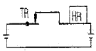
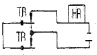
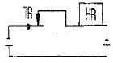
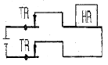
(정답률: 79%)
55. 신호기를 현시별로 분류할 때 신호기의 현시를 정지, 진행 또는 주의, 진행으로 점등하여 주는 것은?
- 1위식 신호기
- 2위식 신호기
- 3위식 신호기
- 4위식 신호기
(정답률: 100%)
56. 어느 직류 궤도회로의 송전전압이 1.6V, 착전전압이 0.9V이었다. 계전기의 단자전압을 0.6V로 정하고자 하면 몇 Ω의 저항을 송전단에 삽입하여야 하는가? (단, 이 때의 송전전류는 0.2A이다.)
- 1.4
- 3
- 3.5
- 8
(정답률: 77%)
57. CTC 장치에서 현장 역의 각종 데이터를 수집해서 중앙으로 정보를 전송해 주는 장치는?
- SSC
- PRC
- CDTS
- LDTS
(정답률: 94%)
58. 다음 중 장내신호기 접근쇄정의 해정시분은?
- 30초 ± 10%
- 60초 ± 10%
- 90초 ± 10%
- 120초 ± 10%
(정답률: 93%)
59. 복선 자동폐색구간의 부본선에 설치된 장내신호기의 정위로 맞는 것은?
- 진행신호 현시
- 주의신호 현시
- 정지신호 현시
- 소등신호 현시
(정답률: 77%)
60. 고속철도 신호설비에서 매칭유니트(Matching Unit)가 하는 역할로 옳은 것은?
- 궤도와 UN71 궤도회로장치의 송신기나 수신기사이의 임피던스를 정합시킨다.
- 궤도와 UN71 궤도회로장치 선로의 인덕턴스 효과를 제한시킨다.
- 궤도와 UN71 궤도회로장치 선로의 동조회로에 대한 특성계수를 개선시킨다.
- 궤도와 UN71 궤도회로장치의 송신기 및 수신기의 전압을 일정하게 보상하고 주파수를 높게 해 준다.
(정답률: 85%)
4과목: 회로이론
61. 다음 중 테브난의 정리와 쌍대의 관계가 있는 것은?
- 일만의 정리
- 중첩의 원리
- 노튼의 정리
- 보상의 정리
(정답률: 47%)
62. 전원과 부하가 다 같이 △결선된 3상 평형 회로가 있다. 전원 전압이 200V, 부하 임피던스가 6+j8Ω인 경우 선전류는 몇 A인가?
- 20
- 20/√3
- 20√3
- 10√3
(정답률: 50%)
63. 정현파 교류의 실효값을 구하는 식이 잘못된 것은?
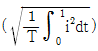
- 파고율×평균치
- 최대치/√2
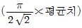
(정답률: 58%)
64. 2개의 교류 전압 V1=100 sin(377t+π/6)[V]와 V2=100√2 sin(377t+π/3)[V]가 있다. 옳게 표시된 것은?
- V1과 V2의 주기는 모두 1/60[sec]이다.
- V1과 V2의 주파수는 377[Hz]이다.
- V1과 V2는 동삼이다.
- V1과 V2의 실효값은 100[V], 100√2[V]이다.
(정답률: 54%)
65. R= 10Ω, L=0.045H의 직렬 회로에 실효값 140V, 주파수 25Hz의 정현파 교류전압을 가했을 때 임피던스[Ω]의 크기는 얼마인가?
- 17.25
- 15.31
- 12.25
- 10.41
(정답률: 54%)
66. 그림의 사다리꼴 회로에서 출력전압 VL은 몇 V인가?
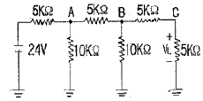
- 2
- 3
- 4
- 6
(정답률: 50%)
67. 그림 ab간에 40V의 전압을 가할 떄 10A의 전류가 흐른다. r1 및 r2에 흐르는 전류비를 1:2로 하려면 r1 및 r2의 저항 [Ω]은 각각 얼마인가?
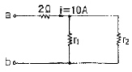
- r1=6, r2=3
- r1=3, r2=6
- r1=4, r2=2
- r1=2, r2=4
(정답률: 72%)
68. 파고율의 관계식이 바르게 표시된 것은?
- 최대값/실효값
- 실효값/최대값
- 평균값/실효값
- 실효값/평균값
(정답률: 50%)
69. 주기적인 구형파 신호의 성분은 어떻게 되는가?
- 성분 분석이 불가능하다.
- 직류분만으로 합성된다.
- 무수히 많은 주파수의 함성이다.
- 교류 합성을 갖지 않는다.
(정답률: 67%)
70. 비사인파의 실효값은 어떻게 되는가?
- 각 고조파의 실효값의 합
- 각 고조파의 실효값 제곱의 합의 제곱근
- 기본파의 3고조파 성분의 합
- 각 고조파의 실효값의 합의 평균
(정답률: 58%)
71. 봉평형 3상전류 Ia=10 + j2[A], Ib=-20 -j24[A], Ic=-5 + j10[A] 일 때 영상전류 Io값은 얼마인가?
- 15 + j2[A]
- -5 - j4[A]
- -15 - j12[A]
- -45 - j36[A]
(정답률: 62%)
72. 이상적인 변압기로 구성된 4단자 회로에서 정수 D를 구하면?
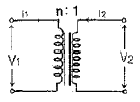
- 1
- 0
- n
- 1/n
(정답률: 47%)
73. 회로에서 단자 1-1‘에서 본 구동점 임피던스 Z11은 몇 Ω인가?
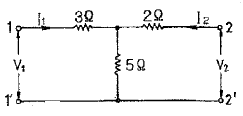
- 5
- 8
- 10
- 15
(정답률: 54%)
74.
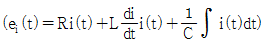
에서 모든 초기조건을 0으로 하고 라플라스 변환하면 어떻게 되는가?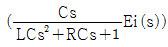
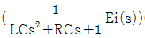
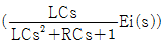
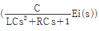
(정답률: 55%)
75.
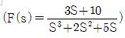
일 때 f(t)의 최종값은?- 0
- 1
- 2
- 3
(정답률: 69%)
76. 그림과 같은 피드백 회로의 전달함수는?
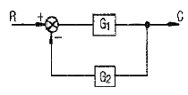
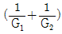
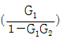
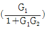
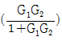
(정답률: 50%)
77. R-C직렬회로의 시정수는 RC이다. 시정수의 단위는 어떻게 되는가?
- Ω
- Ω㎌
- sec
- Ω/F
(정답률: 62%)
78. R-L-C 직렬회로에서 L=0.1×10-3[H], R=100[Ω], C=0.1×10-6[F]일 때 이 회로는?
- 비진동적이다.
- 진동적이다.
- 정현파로 진동한다.
- 진동과 비진동을 반복한다.
(정답률: 50%)
79. 회로방정식의 특성근과 회로의 시정수에 대하여 바르게 서술된 것은?
- 특성근과 시정수는 같다.
- 특성근이 역(逆)과 회로의 시정수는 같다.
- 특성근의 절대값의 역과 회로의 시정수는 같다.
- 특성근과 회로의 시정수는 서로 상관되지 않는다.
(정답률: 57%)
80. 어느 3상 회로의 선간전압을 측정하니 Va=12[V], Vb=-60-j80[V], Vc=-60+j80[V]이었다. 불평형률[%]은?
- 13
- 27
- 34
- 41
(정답률: 34%)
β = α / (1 - α)
따라서, α가 0.95일 때,
β = 0.95 / (1 - 0.95) = 19
따라서, 정답은 "19"입니다.